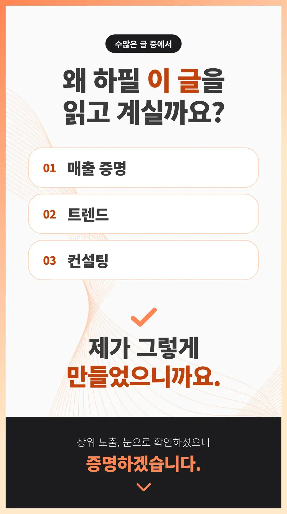
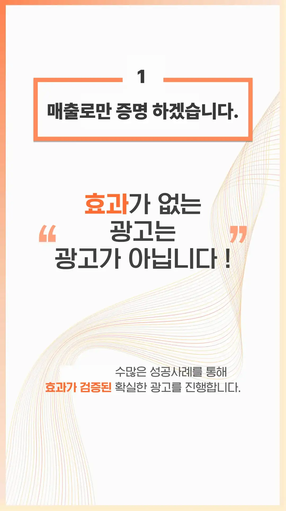
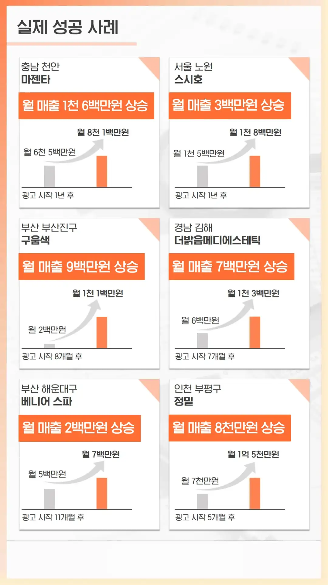
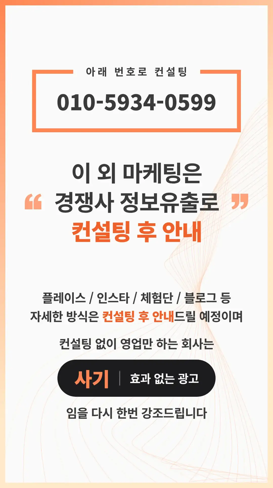
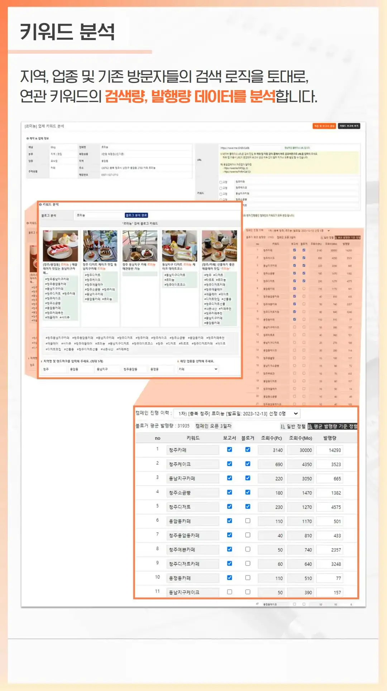
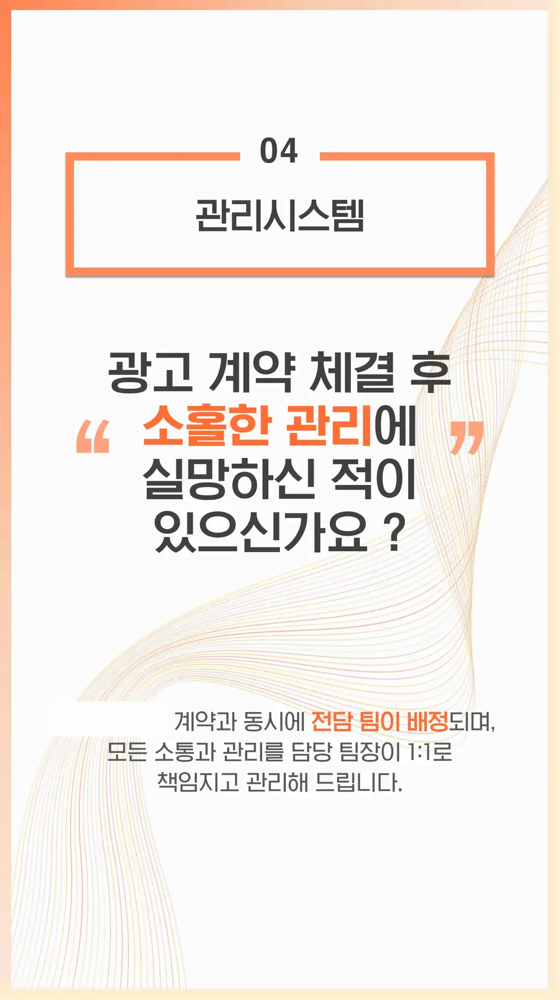
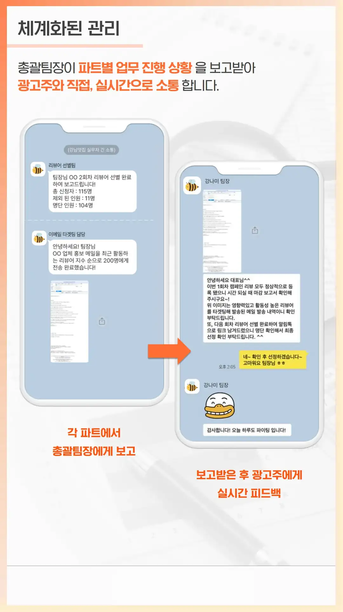
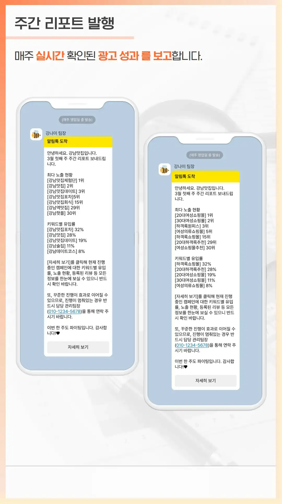
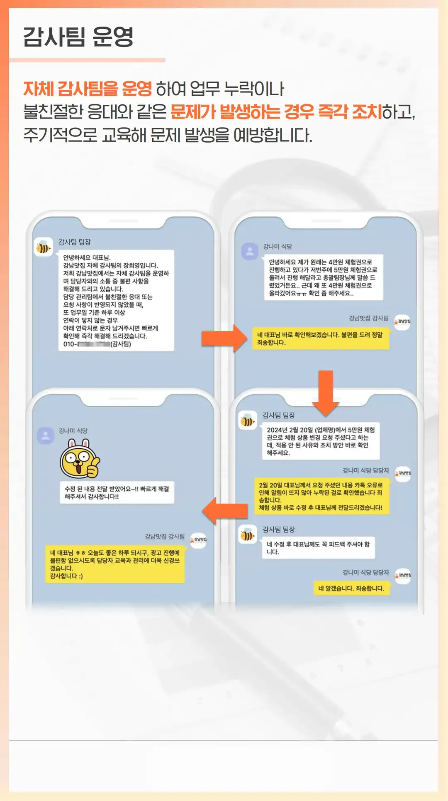

도이동 블로그 작업 자영업자 소상공인 창업
도이동 블로그 작업 자영업자 소상공인 창업 찾는 이유 가게 문을 연 지 일 년이 지났는데 매장 사진 한 장 없이 간판만 걸어둔 채 영업하는 분들이 의외로 많아요. 처음에는 입소문만 믿고 기다렸지만 현실은 생각보다 냉혹하죠. 야심 차게 준비한 신메뉴를 출시해도 알릴 방법이 없으니 반응이 없는 건 당연한 결과예요. 예전에는 동네 주민들만 오가도 장사가 되었지만 지금은 고객들이 스마트폰으로 검색부터 하거든요. 검색 결과에 우리 가게 정보가 없으면 아예 존재하지 않는 매장으로 취급받기 십상이에요. 실제로 검색을 통해 들어온 손님은 이미 메뉴와 가격을 파악하고 오기에 주문 확률이 높고 객단가도 올라가죠. 반면 정보가 없는 가게는 지나가다 우연히 들르는 손님에만 의존해야 해서 매출이 불안정해요. 정성스럽게 찍은 사진과 진심 어린 리뷰 하나가 쌓이면 온라인상의 신뢰 자산이 되고 이것이 곧 매출로 직결되는 시대예요. 이제는 홍보가 선택이 아닌 생존을 위한 필수 과정이 되었다는 사실을 인정하고 적극적으로 움직여야 할 때가 되었어요.
상권 특성과 방향
가게가 자리 잡은 지역의 특성을 파악하지 못하면 헛돈을 쓰기 십상이에요. 어학원과 교육 시설이 밀집한 곳이라면 학부모와 글로벌 소비자를 겨냥한 타겟형 채널을 파고들어야 효과를 볼 수 있어요. 반대로 연구단지나 오피스 빌딩이 몰린 직장인 상권이라면 점심과 저녁 시간에 맞춘 빠른 검색 노출이 승부를 가르는 열쇠가 돼요. 주거 중심 지역은 네이버 플레이스 순위 관리와 진정성 있는 블로그 체험단 리뷰가 탄탄한 단골을 모으는 기반이 되고요. 이처럼 우리 가게 문을 두드리는 주 고객층의 동선을 정확히 읽고 맞춤형 채널을 공략해야 후회 없는 결과를 만들 수 있어요.
대표님이 주의할점
많은 사장님이 계약서에 업무 범위가 모호하게 적힌 탓에 곤란을 겪곤 해요. 단순히 광고를 해준다는 말만 믿었다가 정작 우리 가게가 원하는 키워드 노출은 빠져 있는 경우를 자주 보거든요. 계약 해지 절차나 그동안 쌓인 마케팅 데이터를 누가 가져가는지 미리 확인하지 않아 나중에 큰 피해를 보기도 하죠. 믿을 만한 업체를 찾으려면 반드시 그들이 작업한 레퍼런스를 직접 검색해 보고 실제 효과가 있었는지 검증해야 해요. 계약할 때는 어떤 키워드로, 몇 건의 포스팅을, 구체적으로 어떤 통계 리포트를 매달 제공할지 명확히 문서로 남겨야 해요. 단순히 저렴한 가격만 강조하는 곳보다는 우리 가게의 상황을 듣고 맞춤형 전략을 제시하는 업체를 고르는 게 중요하죠. 데이터 제공이 투명하지 않거나 계약 기간에만 급급한 곳은 피하는 게 상책이며, 사장님께서 조금이라도 이상하다고 느끼면 과감하게 다른 곳을 알아보는 결단력이 필요해요.
도이동 블로그 작업 자영업자 소상공인 창업 비용
도이동 블로그 작업 자영업자 소상공인 창업 비용은 마케팅 비용을 고민할 때는 단기적인 매출 증대와 중기적인 브랜드 가치 상승을 구분해서 예산을 짜야 해요. 처음 시작하는 사장님이라면 무리하게 큰 금액을 쏟기보다 월 30만 원에서 50만 원 수준으로 네이버 플레이스 최적화와 기본 SNS 관리를 시작하는 것이 적당하죠. 너무 싼 업체는 저품질 콘텐츠를 양산하거나 단순 반복 작업만 할 가능성이 크고, 반대로 너무 비싼 곳은 초기 단계의 소상공인에게는 과도한 부담이 될 수 있어요. 비용을 지출할 때는 계약서에 반드시 '포스팅 횟수', '키워드 노출 범위', '제공되는 리포트 주기' 같은 항목을 상세히 명시하세요. 업종별로 차이가 있지만 외식업은 플레이스 상위 노출에 집중하고, 뷰티 서비스업은 인스타그램 이미지 광고에 예산을 더 배정하는 식으로 전략을 다르게 가져가야 해요. 마케팅은 한 번에 끝나는 행사가 아니라 지속적인 투자라는 점을 기억하세요. 매출 규모가 작을 때는 직접 할 수 있는 영역과 전문가의 도움이 필요한 부분을 명확히 나눠서 예산을 효율적으로 배분하는 것이 핵심이에요. 처음부터 큰 효과를 기대하기보다는 꾸준히 우리 가게를 알리는 과정에서 서서히 매출이 오르는 경험을 해보는 것이 중요해요.
자주 하는 실수
가게 오픈 초기에는 정신이 없어서 마케팅을 미루는 경우가 참 많아요. 하지만 오픈 직후의 골든타임을 놓치면 입소문을 낼 기회를 영영 잃어버릴 수 있거든요. 온라인 채널을 만들어두고도 오프라인 매장에서 전혀 홍보하지 않는 것도 대표적인 기회 손실이에요. 계산대 옆에 리뷰 이벤트 안내판을 두거나 배달 봉투에 정성 어린 쪽지를 하나 넣는 것만으로도 온라인 유입을 늘릴 수 있거든요. 또 다른 실수는 너무 판매에만 집착한 콘텐츠를 올리는 일이에요. 손님들은 광고보다는 사장님의 진심 어린 일상이나 식재료에 대한 고집을 궁금해해요. 매일 똑같은 홍보 글만 올리면 사람들은 금방 피로감을 느끼거든요. 이런 실수를 줄이려면 손님 입장에서 우리 가게를 어떻게 바라볼지 고민하는 과정이 필요해요. 작은 변화라도 꾸준히 시도하며 손님의 반응을 살피는 것이 마케팅 성공의 첫걸음이에요. 지금 당장 가게 안을 둘러보고 온라인 홍보로 연결할 요소가 있는지 찾아보세요.
직접 하는 것과 맡기는 것의 차이
도이동 블로그 작업 자영업자 소상공인 창업는 마케팅을 내 손으로 직접 챙겨야 할지, 아니면 돈을 주고 전문가에게 맡겨야 할지 매일 밤고민하는 사장님들이 참 많아요. 직접 스마트폰을 들고 매장의 일상이나 메뉴 개발 과정을 진솔하게 기록하면, 사장님의 진짜 이야기가 담긴 콘텐츠가 만들어져서 공장형 광고와는 비교할 수 없는 독보적인 개성을 갖추게 돼요. 하지만 장사 준비와 마감으로 하루 스케줄이 꽉 찬 사장님이 매일 꾸준히 글을 쓰고 영상을 편집하기란 물리적으로 거의 불가능에 가까운 일이에요. 이럴 때 전문 업체에 일을 맡기면 소비자의 심리와 최근 검색 트렌드를 정확히 반영해서 클릭을 부르는 매력적인 카피와 세련된 디자인 결과물을 안정적으로 뽑아낼 수 있어요. 아직 초기 자금이 부족하고 손수 매장을 알릴 시간적 여유가 조금이라도 있다면 직접 부딪혀보며 감을 익히는 것이 좋지만, 매출이 어느 정도 안정궤도에 올랐고 시간적 여유가 없다면 전문가의 힘을 빌려 효율을 높이는 것이 훨씬 현명한 선택이에요.
자주 묻는 질문
마케팅 시작 전에 준비할 게 있나요
가장 먼저 스마트폰으로 지도 앱에 등록된 우리 가게 정보가 정확한지 확인하시고, 메뉴판 사진과 대표 상품의 깔끔한 이미지를 최소 열 장 이상 준비해 두셔야 광고 효과를 제대로 볼 수 있어요.
효과가 나타나기까지 얼마나 걸리나요
검색 광고는 비용을 쓰는 즉시 반응이 오지만 블로그나 플레이스 최적화 작업은 보통 두 달에서 세 달 정도의 누적 기간이 지나야 비로소 가시적인 순서 상승과 유입 효과가 나타난답니다.
작은 가게도 마케팅 업체를 써야 하나요
예산이 부족하다면 혼자서 영수증 리뷰 이벤트를 먼저 진행하고 블로그 체험단을 소규모로 셀프 섭외하는 방식으로 시작해도 충분하며, 시간이 절대적으로 부족할 때만 부분 위탁을 고려해 보세요.
업체를 쓰다가 중간에 그만두면 어떻게 되나요
그동안 쌓아둔 플레이스 기본 세팅이나 자사 블로그 포스팅은 남아 있지만 업체의 기술적인 키워드 관리나 지속적인 리뷰 유입이 끊기면 몇 달 뒤 서서히 순서가 하락할 위험이 커져요.
어뷰징이나 저품질 걱정은 없나요
프로그램을 돌리거나 불법적인 매크로 방식을 쓰는 저렴한 대행사를 만나면 포털 사이트 알고리즘에 걸려 가게 페이지가 검색에서 아예 제외되는 최악의 저품질 사태를 겪을 수 있으니 주의하세요.